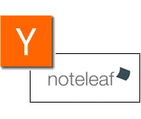
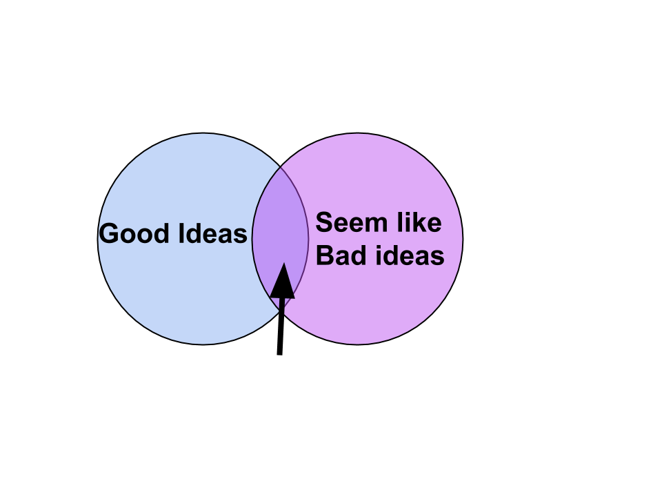
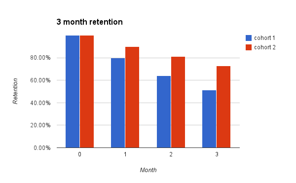
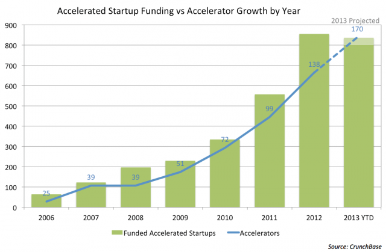
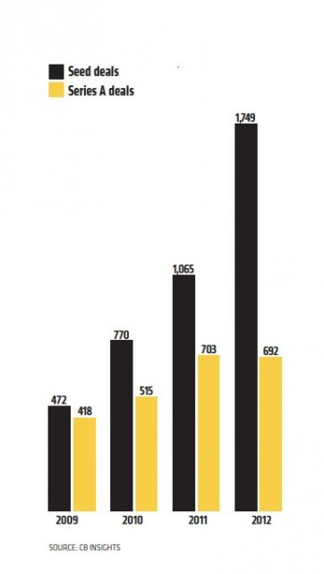
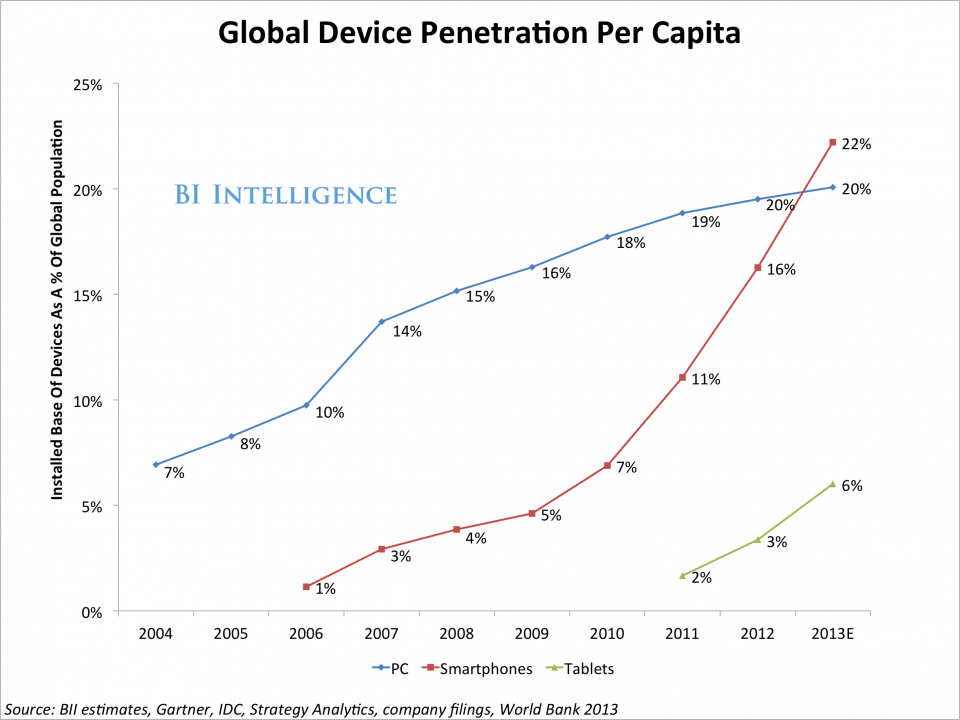

Business of Startups
- My Story
- Startup Lifecycle
- Startup Economics
- Startup Trends
- Further Reading
My Story
2006


- http://paulgraham.com/mit.html
- http://paulgraham.com/startupmistakes.html
PG's tips for startups
- People over product
- Iteration over perfection
- Great execution over great idea
- "Build something people want"
- Scratch your own itch
- Launch fast/fail fast
Y Combinator
- 8 startups in Summer 2005 to 84 startups in Summer 2012
- http://yclist.com/
- Dropbox, AirBnb: $10 billion
- 17 acquisitions for over $10 million
http://news.ycombinator.com


http://startupschool.org/
Noteleaf


Start X

Demo Day

VC


Employee #30 at Coursera, founded by Dahpne Koller and Andrew Ng (Raffles grad)


Game Closure's Start X class
- 13 companies
- 4 acquisitions
- 3 series A rounds
Startup Life Cycle
Pre-existence Stage
- Bootstrapping: running on savings or day-job
- Boostrapped business: 37 Signals "bootstrapped, profitable, and proud"
Early stage
- Get incorporated, divide equity
- Incubator, accelerator
- YC standard: $120k for 7% equity ($1.7M)
- Challenge: gather evidence for business model
Funded stage
- Seed round: $50,000 - $2 million
- Friends & family + angel investors
- Angel list
- Kickstarter: Oculus Rift, Soylent, Pebble
- Challenge: initial traction
Middle Stage
- Series A: $2 million - $20 million
- Series B: $10 million - $60 million
- About 20% of seed funded startups get series A
- Each round takes ~20% of equity
- Challenge: scale traction
Profit Stage
- Don't need more money to stay alive
- May raise money anyway to grow and lock in competitive advantage (Github's $100M)
- Challenge: own the market
Exit
- Acquihire: Posterous -> Twitter (~$7 million)
- Acquisition: Heroku -> Salesforce.com ($250 million)
- IPO: Google (raised $1.67 billion at $23 billion valuation)
- Never, stay private: 37 signals
- Die... ~80% startups
Startup Economics
Power law
- YC: top 2 companies (out of over 500) account for ~90% of YC returns
- Peter Thiel: top 1 company worth as much as rest of Founders Fund 2005
The "Unicorn Club"
- 39 billion-dollar US tech companies in the last 10 years
- http://techcrunch.com/2013/11/02/welcome-to-the-unicorn-club/
Peter Thiel's startup sweet spot
"what important truth do very few people agree with you on?"

http://blakemasters.com/peter-thiels-cs183-startup
Own your market
- Avoid competitive markets - ex. Restaurants
- Valuable startups have a competitive advantage
- brand (clothing, colas)
- scale cost advantages (Amazon.com)
- network effects (twitter)
- or proprietary technology (Paypal fraud detection)
Total Addressable Market
- Who cares if you own a market if it is tiny...
- example: US Advertising $144B/year
Customer Acquisition
- CLV = customer lifetime value
- ARPU = avg. revenue per user per month
- r = retention rate (per month)
- ACL = average customer lifetime = 1 / (1 - r)
- CPA = cost per acquisition
CLV = ARPU * ACL * gross margin
if CLV > CPA, then spend!
Exponential Growth
- "rule of 72" - doubling period is 72 / growth rate
- doubling adds up quick!
http://www.paulgraham.com/growth.html
Virality
- K-factor: how many new users does a new user bring in
- K-factor over 1 for true viral growth
- Viral cycle: how fast does it happen
- see: http://www.forentrepreneurs.com/lessons-learnt-viral-marketing/
Retention
- Change in 90-day retention reflect the health of the business
- Other health metrics: Monthly Active Users, Daily Active Users, DAU / MAU
Stock Options
- Typically, founders keep 80% of equity and award 20% to employees
- Typical first employee grant: 1.0%. 20th employee grant: 0.1%
- Working at a startup vs. founding - better salary, less risk, less equity
- But to be Facebook millionaire, only needed 0.001% of company
- Most grants vest over four years
Startup trends
Early stage funding growth
 http://techcrunch.com/2013/11/19/the-startup-accelerator-trend-is-finally-slowing-down/Series A crunch
http://tech.co/series-crunch-demystified-2013-12
Software is eating the world
- Phrase coined by Marc Andreesen
- Software startups taking over non-software industries: Uber, Homejoy, Amazon
- Previously: music, entertainment, telephony, retail
- Possible future: financial system (bitcoin)
Mobile is eating the startup world
 http://www.businessinsider.com/smartphone-and-tablet-penetration-2013-10Breakthrough technologies
- "Sci Fi" tech
- Bitcoin, Artificial Intelligence, drones/robotics, 3D printing, VR, applied genetics, living forever...
- Calico, Google X, Elon Musk, YC request for breakthrough startups: http://blog.samaltman.com/new-rfs-breakthrough-technologies
Internationalization of startups
- YC taking startup school global
- 22 companies in last batch
Books about founders:
- Founders at Work
- In the Plex
- Steve Jobs
- The Hard Thing about Hard Things
- Zero to One (or the Thiel lecture notes: http://blakemasters.com/peter-thiels-cs183-startup)
- Hackers and Painters
- The Tinkerings of Robert Noyce